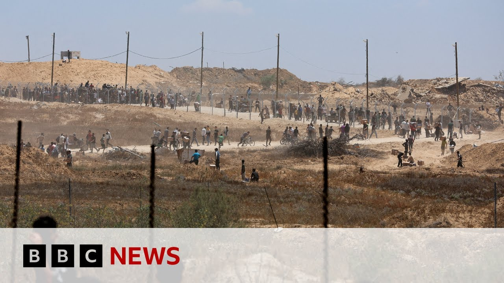

【加沙官员报告援助中心枪击事件造成六人死亡 | BBC新闻】
Summary: There's been another shooting near a US-backed aid center in southern Gaza, killing six Palestinians and wounding several. Israel says it fired warning shots at suspects approaching threateningly, while also recovering the body of a Thai hostage held since October 7.
摘要： 美国支持的加沙南部援助中心附近再次发生枪击事件，造成六名巴勒斯坦人死亡，多人受伤。以色列称向威胁性靠近的嫌疑人鸣枪警告，同时寻获一名自10月7日被扣押的泰国人质遗体。

⏱️ Estimated Reading Time: 8 min
📚 六级生词 📚 雅思生词 📚 托福生词 📚 GRE生词 📚 视频里的生词
There's been another shooting incident near a US-backed aid distribution center in southern Gaza.
加沙南部一处美国支持的援助分发中心附近再次发生枪击事件。
Gaza's civil defense agency says six Palestinians were killed and several wounded by Israeli gunfire while gathering to collect food supplies.
加沙民防机构称，六名巴勒斯坦人在聚集领取食物时遭以色列枪击身亡，多人受伤。
The Israeli military said it fired warning shots at suspects who approached them in a threatening manner.
以色列军方表示，他们向以威胁方式靠近的嫌疑人鸣枪示警。
Separately, the Israeli military also announced today it's recovered the body of a Thai hostage who'd been held in Gaza since Hamas's October the 7th attack on Israel.
另据消息，以色列军方今日宣布寻获一名自哈马斯10月7日袭击以色列以来被扣押在加沙的泰国人质遗体。
Natang Pinta was an agricultural worker in southern Israel when he was kidnapped.
Natang Pinta被绑架时是以色列南部的一名农业工人。
The Israel Defense Forces said his body had been retrieved during a special operation in the Rafa area of southern Gaza.
以色列国防军称，其遗体是在加沙南部拉法地区的一次特别行动中找到的。
Israel believes around 20 hostages are still alive in the territory.
以色列认为仍有约20名人质在该地区存活。
Our correspondent, Barbara Plet Usha, spoke to us from Jerusalem.
本台记者Barbara Plet Usha从耶路撒冷发回报道。
First, she told us more about this latest shooting incident.
她首先详细介绍了最新的枪击事件。
Well, Lewis, it happened um at a roundabout in southern Gaza where Palestinians gather uh before the aid distribution site opens.
Lewis，事件发生在加沙南部一处环岛，巴勒斯坦人常在援助分发点开放前聚集于此。
So, this is the place where we've had those shootings earlier in the week.
本周早些时候的枪击事件也发生在此地。
People gather, tens of thousands of them waiting for access to this distribution site.
数万人聚集等待进入该分发点。
Uh and then in the process of getting to it uh there have been firings uh and shootings and dozens have been killed, hundreds injured.
在前往过程中发生交火和枪击，已致数十人死亡、数百人受伤。
Um now what happened uh it sounds like something similar.
此次事件听起来类似。
Uh the an eyewitness the the civil defense agency said that the Israelis had opened fire on the crowd.
民防机构称目击者指认以色列向人群开火。
Um what the Israelis said was they had warned the Gazins that they that this area outside the distribution center was a combat zone from 6:00 in the evening to 6:00 in the morning.
以色列方表示已警告加沙民众，分发中心外围区域在晚6点至早6点为交战区。
uh and that several individuals had approached them in a threatening manner and they had opened fire with warning shots.
数人以威胁姿态靠近，以军遂鸣枪警告。
They said there they were aware of the reports of the casualties.
以军称已知晓伤亡报告。
Now, this is a similar scenario to what they talked about on Tuesday when many more Palestinians were killed, that they had fired at suspects that veered toward them and didn't pay attention uh to warning shots.
这与周二导致更多巴勒斯坦人死亡的场景相似——以军称当时向无视警告继续靠近的嫌疑人开火。
So, this is quite a a volatile area for the Palestinians to have to wait and pass through to get to the aid distribution site.
因此，巴勒斯坦人等待和通过以获取援助的区域局势高度紧张。
the the company or the organization that runs this these distribution centers shut things down for a bit this week trying to improve this the centers trying to improve because there's been massive overcrowding and also to improve the safety um but it looks as if there's still that kind of dynamic uh where the Palestinians who gather for for food in the morning um are are in danger of either death or injury.
运营这些分发中心的组织本周曾短暂关闭以改善设施（因严重拥挤）并提升安全性，但清晨聚集领取食物的巴勒斯坦人仍面临伤亡风险。
And Barbara, given the similarities to those previous incidents that you are outlining there and the criticism of this particular aid operation from many international organizations through the week, how damaging will these reports be?
鉴于事件与先前类似且本周多国组织批评该援助行动，这些报道将造成多大负面影响？
Well, I don't think they're going to improve the reputation of this model of distribution.
我认为这无助于提升该分发模式的声誉。
Um what there have been many criticisms as you said from international aid organizations and from the UN but the ones that deal with how effective it is have pointed out that the the the way that they distribute aid international aid organizations is to take the food supplies to the communities and deliver them according to like a registration list to the people that they know uh need it uh in an orderly way.
如您所言，国际援助组织和联合国提出诸多批评，尤其指出现行模式效率低下——常规做法是按登记名单有序向社区直接配送。
This is quite a different model because it requires Palestinians to come to several big distribution hubs which means they have to travel from different parts of the Gaza Strip.
现行模式要求巴勒斯坦人前往数个大型分发中心，需从加沙各地长途跋涉。
Some of them walk for hours, which means they have to gather at a certain point uh until they're allowed in and which creates these security issues uh we we've been seeing because at least in this southern this southern um uh hub, they have to pass through an Israeli military zone which puts them in close proximity with Israeli soldiers.
有人步行数小时聚集等候准入，由此引发安全风险——在南部枢纽需穿越以军管控区，与士兵近距离接触。
So uh as I said there there were efforts this week to try to improve the the situation and how it works.
本周虽尝试改善运营方式，
But given that something similar has happened again, that isn't going to uh stop the criticism.
但类似事件重演将无法平息批评。
And Barbara, let's move to the second significant development, the recovery of that body by the Israeli forces.
请谈谈以军寻获遗体的另一重要进展。
Yes. Um the Israeli uh army said that it had recovered the body of uh Nutapang Pinta from uh the the area of Rafa in southern Gaza.
以军宣布从加沙南部拉法地区寻获Nutapang Pinta遗体。
It was a special operation, a joint operation with with the military troops as well as intelligence agency.
此为特种部队与情报机构联合行动。
Uh, and they had been able to um find get precise information about the location of of the body after conducting an interrogation uh of a prisoner of what they called a captured terrorist.
通过审讯一名被俘"恐怖分子"获知遗体准确位置。
Um, and they have brought the body back and they have notified the family which is preparing to receive uh Mr. Nutapong Pinta and uh and bury him.
遗体已运回并通知家属，其家人正筹备安葬事宜。
He was uh a 35-year-old uh married father of a young son.
这名35岁的已婚男子育有一幼子。
He had come to to Israel like many people from Thailand to work in the kabutz near the Gaza Strip uh in the agriculture there and he was captured the army says uh on the day of the October attack led by Hamas although the group that captured him was a different one.
与其他泰国劳工一样，他在加沙附近集体农庄务农，以军称其在10月7日哈马斯袭击当日被另一组织"穆贾希德旅"绑架。
It was called the Mujahedin Brigades brought into Gaza and then the Israeli army says that he was killed uh in captivity.
以军称其在囚禁期间遇害。
We did try to contact his wife.
我们尝试联系其妻子。
The BBC tried to contact his wife.
BBC试图联系其妻子。
Uh she did not answer the call, but she did send a text with a photograph of his little son um who was crying.
她未接听但发来幼子哭泣的照片。
Barbara plaure without update.
Barbara Plet Usha报道。